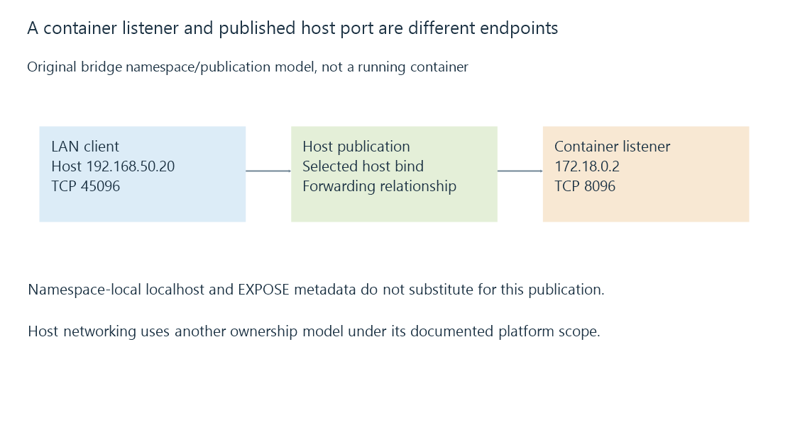

Container network modes and reachable service endpoints
A container’s network mode selects the namespace and forwarding relationship that owns its service listener, with published ports and discovery behavior depending on the actual implementation.
Emby can listen successfully inside a container while another device cannot reach that listener. The container’s address and namespace are part of the network path.
A host address, container address and published endpoint are related but distinct selections.
Bridge networking adds another address realm
Use this original reduced Docker-style bridge arrangement:
{
"hostAddress": "192.168.50.20",
"containerAddress": "172.18.0.2",
"containerTcpPort": 8096,
"publishedHostTcpPort": 45096
}
The service belongs to the container’s TCP listener at 8096. The declared published endpoint makes a separate host-port association at 45096.

Another device using the host’s port 8096 is not selecting this model’s published 45096 endpoint.
Publishing does not make an absent container listener ready. The host/gateway route and policy still need to permit the intended path.
Container localhost identifies its own namespace
A client process inside another isolated namespace interprets localhost there. It does not automatically identify Emby’s container or the Docker host.
User-defined bridge networks can provide their own container-name/service relationships. A proxy’s upstream needs the endpoint available in the proxy’s actual namespace.
An EXPOSE declaration describes container/service metadata; port publication is a separate operation.
Host networking changes the ownership model
In host mode, the container uses the host network stack under the supported implementation. The service therefore competes for the host’s listener ports rather than obtaining an independently translated published port.
Docker documents host networking for Linux and an opt-in Docker Desktop implementation. The Desktop arrangement has its documented layer-four limitations; it should not be generalized into identical low-level behavior on every platform.
Port publishing is not the same mechanism in host mode. A conflicting host listener can consequently prevent the desired service from binding.
Discovery needs its own reachable scope
A TCP publication can make manual application access work without relaying a local broadcast or multicast into the container’s context.
A host-mode or another network design can expose a different discovery path. The supported driver, platform and interface selection determine the actual result.
Emby discovery remains a separate exchange from the later media listener.
Bind intent and actual exposure are separate observations
A published port can target selected host addresses. Loopback-only and all-interface intent describe different scopes.
Docker’s documentation also identifies version-specific behavior, so a displayed bind value should not replace checking the intended implementation’s actual reachability.
See Also
- Loopback addresses and the meaning of localhost
- Port forwarding and the complete inbound path
- Emby server discovery and advertised endpoints
- Firewalls, traffic rules and connection state